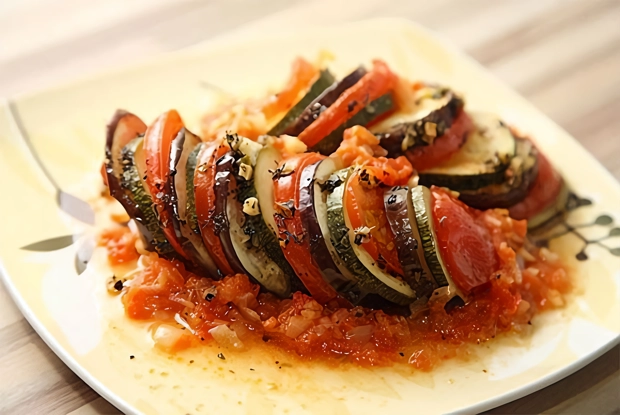
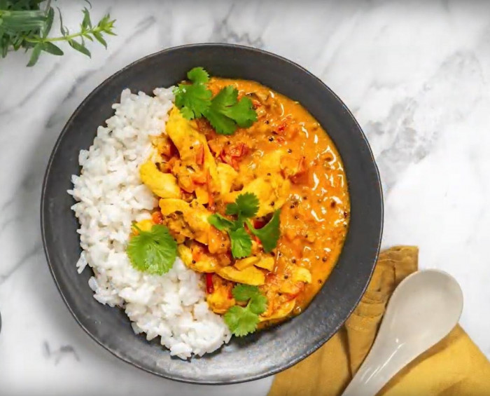
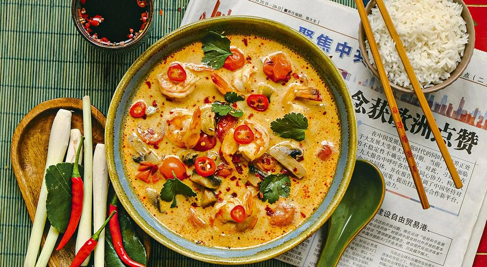
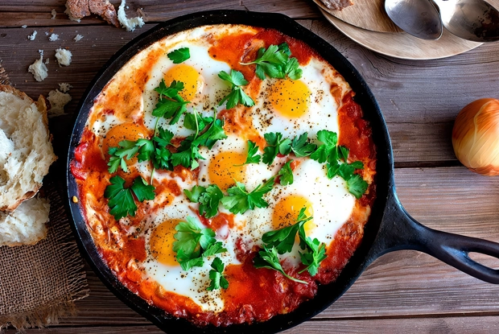
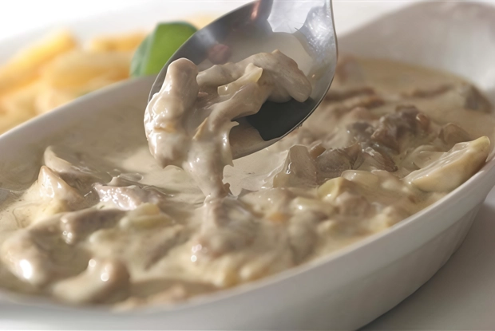
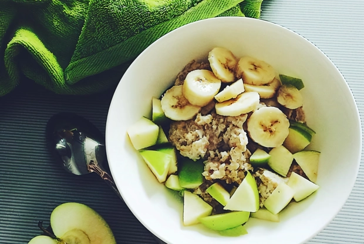

| Название блюда | Оценка (1-10) | Ссылка на рецепт | Фото блюда |
|---|---|---|---|
| Овощной рататуй | 9 | Рецепт |  |
| Карри с курицей | 8 | Рецепт |  |
| Том Ям | 10 | Рецепт |  |
| Шакшука (яичница с помидорами) | 7 | Рецепт |  |
| Бефстроганов из говяжьей вырезки | 9 | Рецепт |  |
| Овсяная каша | 4 | Рецепт |  |